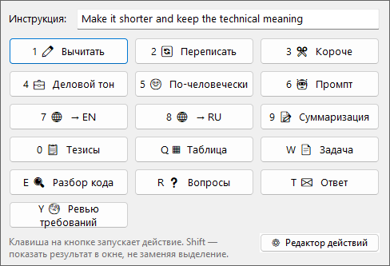
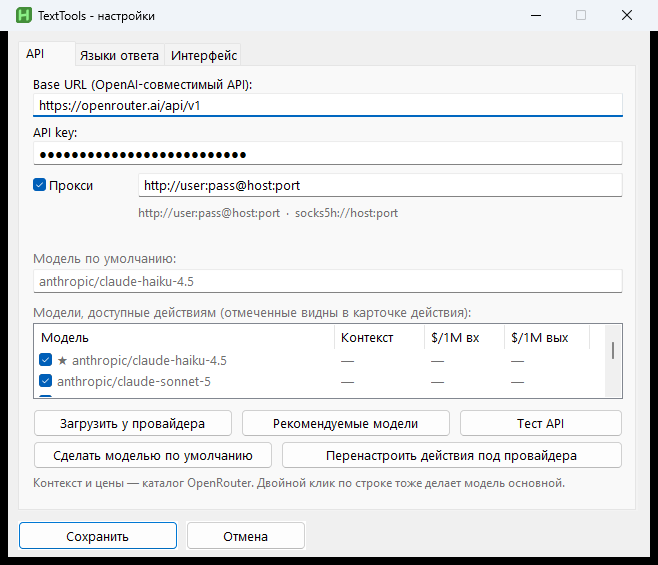
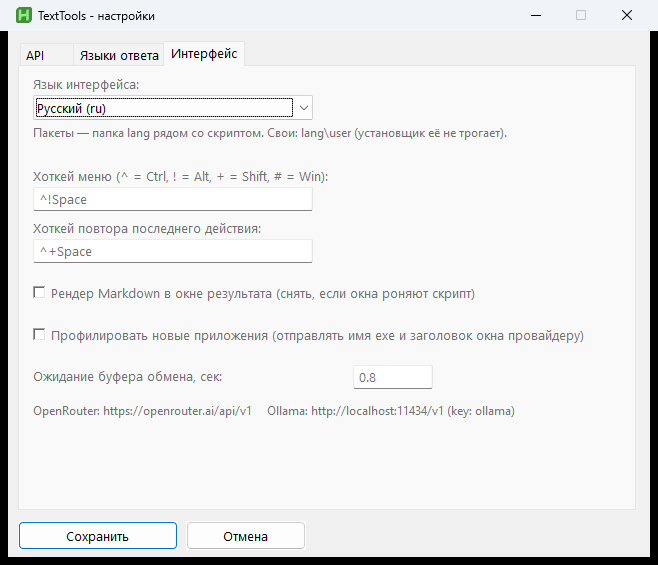
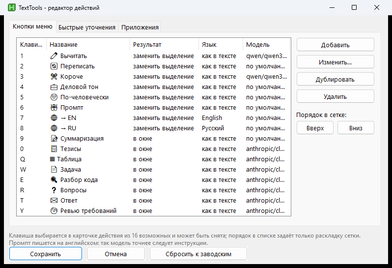
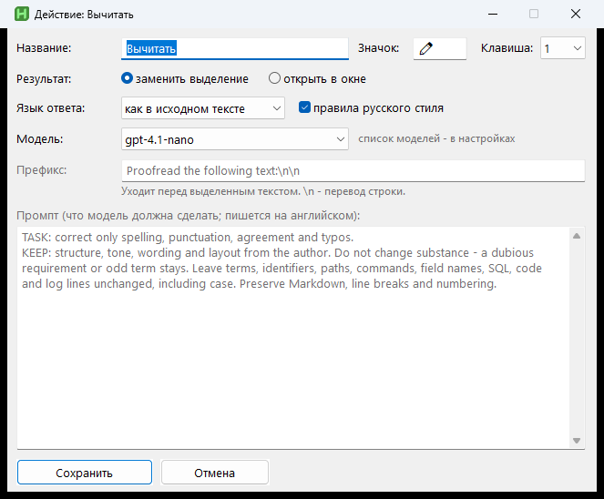
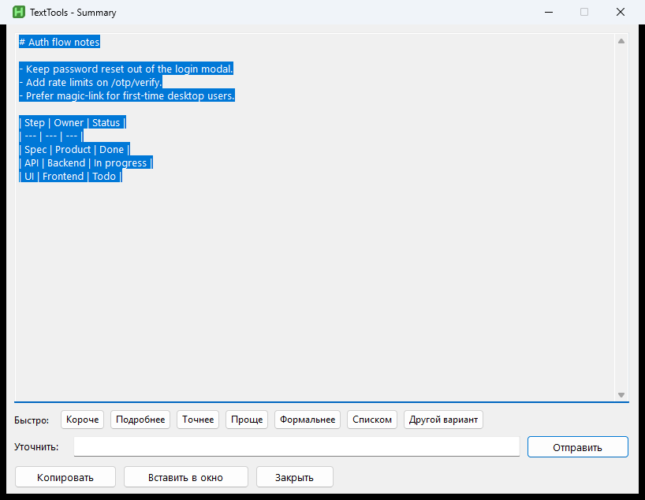

Один хоткей в любом окне
Браузер, почта, IDE, Excel — без плагинов и без копирования в чат. Открыл меню, выбрал действие или дописал свою инструкцию.
Windows · AutoHotkey v2
Выдели текст в любом приложении, нажми хоткей — появится сетка действий. Вычитка, переписывание, краткое изложение, таблица, разбор кода и остальное. Результат либо встанет вместо выделения, либо откроется в отдельном окне.

Это обычный локальный скрипт AutoHotkey. Ключ и настройки лежат у тебя на машине; к модели уходит только текст конкретного действия.
Браузер, почта, IDE, Excel — без плагинов и без копирования в чат. Открыл меню, выбрал действие или дописал свою инструкцию.
OpenRouter, OpenAI, прокси Anthropic, локальный Ollama — всё, что отвечает на /v1/chat/completions. Можно задать модель по умолчанию и отдельно на действие.
Кнопки, промпты и подсказки «откуда текст» (IDE, почта, таблица…) настраиваются из трея. Сломал — сбросил к заводским.
Меню по хоткею, настройки API, редактор промптов и окно с результатом — всё из трея.





Шестнадцать действий в сетке. Ниже — те, которыми чаще всего пользуюсь сам.
proofreadПоправить форму, смысл не трогатьrewriteСделать яснее, без водыsummaryСжать до сутиtableСобрать Markdown-таблицуspecНабросать спеку под разработкуcodeРазобрать кусок кодаreplyЧерновик ответаreqreviewПройтись по требованиямУстановка
Нужны AutoHotkey v2 и системный curl.exe. install.ps1 кладёт файлы в %LOCALAPPDATA% и вешает автозапуск.
winget install -e --id AutoHotkey.AutoHotkey
git clone https://github.com/BelyaevAD/TextTools.git
cd TextTools
powershell -ExecutionPolicy Bypass -File .\install.ps1
# Трей → Настройки → API keyКлюч живёт только в локальном TextTools.ini. История на диске хранит тексты — в git её лучше не класть.
curl.exe, не через WinHTTP внутри AHK.Ctrl+Alt+Space: Ctrl+Space часто уже занят IME и другими хуками.http://127.0.0.1:11434/v1.lang/*.ini; заводской UI на английском.